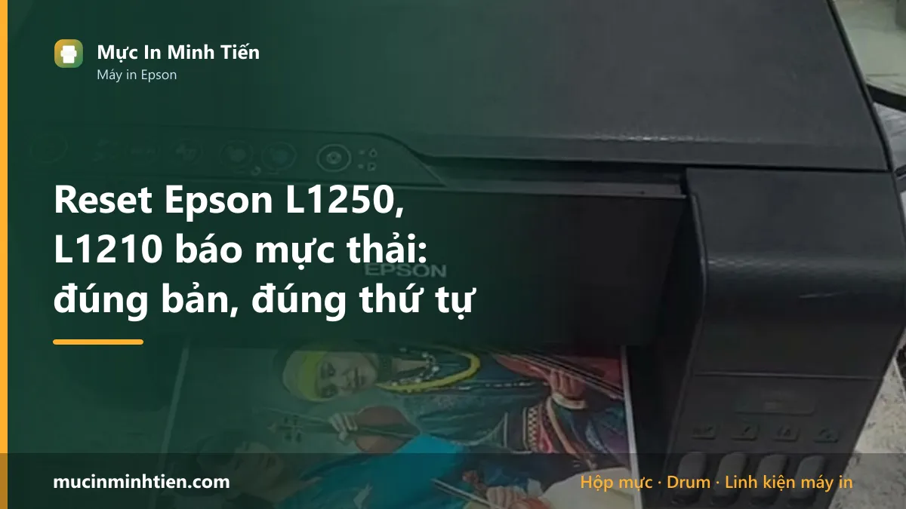
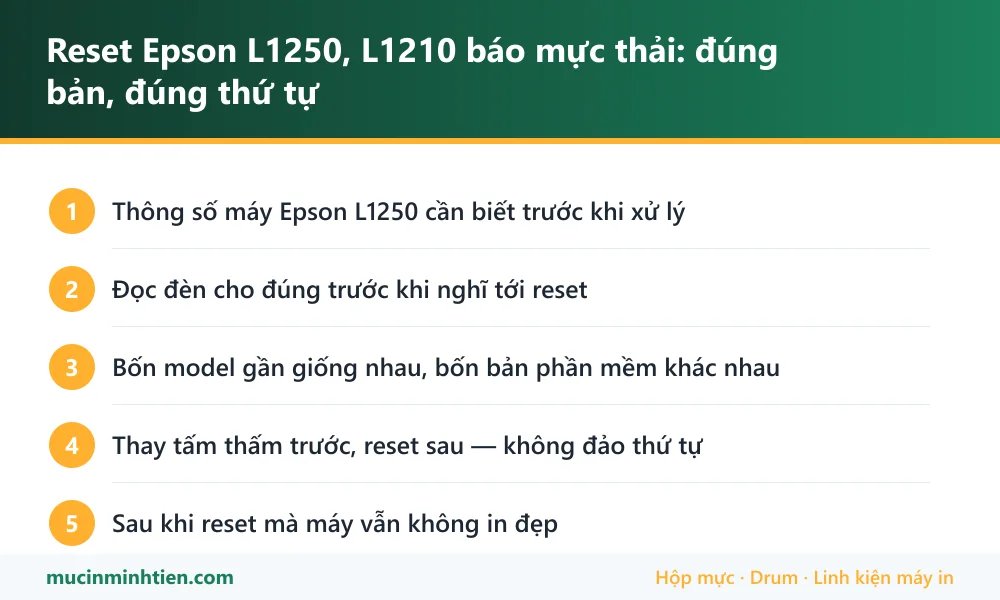

Reset Epson L1250, L1210 báo mực thải: đúng bản, đúng thứ tự

Epson L1250 và L1210 nháy đèn rồi ngừng in khi bộ đếm mực thải đầy. Thứ tự đúng là đọc mức bộ đếm, thay hoặc giặt tấm thấm dưới đáy máy, rồi mới reset bằng bản phần mềm đúng model — L1210, L1230, L1250, L1270 nhìn giống nhau nhưng không dùng chung bản.
Thông số máy Epson L1250 cần biết trước khi xử lý
Biết đúng máy mình đang dùng loại nào giúp khỏi mua nhầm vật tư và khỏi làm theo hướng dẫn của dòng khác.
| Hạng mục | Chi tiết |
|---|---|
| Kiểu máy | In phun bình mực khổ A4, một chức năng — chỉ in, không scan, không copy |
| Mực dùng | Epson 003 — bốn màu BK/C/M/Y, dạng chai châm vào bình |
| Màn hình | Không có. Mọi thông báo đọc qua tổ hợp đèn |
| Bộ đếm mực thải | Có. Đầy thì máy khoá, hai đèn nháy cùng lúc |
| Bản phần mềm reset | Riêng từng model: L1210, L1230, L1250, L1270 không dùng chung |
Đọc đèn cho đúng trước khi nghĩ tới reset
Dòng này không có màn hình nên mọi thứ nằm ở đèn. Hai tổ hợp hay bị nhầm với nhau:
- Đèn giấy và đèn mực nháy xen kẽ — thường là kẹt giấy hoặc còn mảnh giấy sót bên trong, không phải mực thải.
- Hai đèn nháy đồng thời, đều đặn, máy không nhận lệnh in — nghiêng về tràn bộ đếm mực thải hoặc lỗi phần cứng.
Cách chắc chắn nhất là dùng phần mềm đọc mức bộ đếm — thao tác này miễn phí. Trên 95% thì đúng bệnh; dưới 90% thì máy khoá vì chuyện khác, reset không giải quyết được gì. Chi tiết tín hiệu đèn xem bài Epson L1210 nháy 2 đèn đỏ.
Bốn model gần giống nhau, bốn bản phần mềm khác nhau
L1210, L1230, L1250 và L1270 cùng khung máy, cùng dùng mực 003, nhìn ngoài gần như không phân biệt được. Nhưng mỗi model có bản reset riêng.
Hậu quả khi chạy nhầm: phần mềm báo không tìm thấy máy (trường hợp nhẹ, hay gặp nhất), hoặc ghi sai thông số khiến máy báo lỗi mới. Nên trước khi tải bất cứ thứ gì, đọc đúng tên model ghi ở mặt trước máy, không đoán theo trí nhớ.
Danh sách model nào reset được và nguồn tải chính chủ nằm ở bảng tra model.
Thay tấm thấm trước, reset sau — không đảo thứ tự
Bộ đếm đầy nghĩa là mút thấm dưới đáy máy đã no mực thật. Reset chỉ xoá con số, mực vẫn nằm đó.
- Rút điện, mở nắp đáy, lấy mút thấm ra kiểm tra.
- Mút đẫm mực đen thì thay mới, hoặc giặt sạch và phơi khô hoàn toàn mới lắp lại.
- Máy in nhiều nên lắp bình mực thải ngoài — lần sau chỉ đổ bình.
- Lắp lại, cắm điện, rồi mới chạy phần mềm reset.
Bỏ bước này thì vài tháng sau mực chảy ra đế máy. Mực ngấm bo mạch là ca sửa đắt nhất trên dòng máy giá rẻ này — nhiều khi tiền sửa gần bằng tiền máy mới.
Sau khi reset mà máy vẫn không in đẹp
Reset chỉ mở khoá máy, không chữa được đầu phun. Dòng L1210 và L1250 hay gặp hai chuyện ngay sau khi reset:
- Bản in sọc ngang, mất màu — đầu phun khô do máy nằm lâu không in. Xử lý theo bài vệ sinh đầu phun Epson, đừng bấm Head Cleaning liên tục vì mỗi lần clean lại đẩy bộ đếm lên.
- Máy kéo giấy không đều — quả đào bám bụi, không liên quan mực thải.
Mực 003 cho dòng này xem giá và cách chọn ở trang mực Epson 003.
Bảng tra: dấu hiệu nào ứng với nguyên nhân nào
| Dấu hiệu | Nguyên nhân | Cách xử lý | Chi phí |
|---|---|---|---|
| Hai đèn nháy đồng thời, không in được | Bộ đếm mực thải đầy | Thay tấm thấm rồi reset đúng bản model | Kiểm tra rồi báo giá |
| Đèn giấy và đèn mực nháy xen kẽ | Kẹt giấy hoặc còn mảnh giấy sót | Mở máy lấy hết giấy vụn, không cần reset | — |
| Phần mềm báo không tìm thấy máy | Chạy nhầm bản của model khác trong nhóm L12xx | Đọc đúng tên model ở mặt trước máy, tải lại đúng bản | — |
| Reset xong in ra sọc ngang | Đầu phun khô, không liên quan bộ đếm | Vệ sinh đầu phun theo quy trình | từ 100.000 đ |
| Mực rỉ ra dưới gầm máy | Đã reset mà chưa thay mút thấm | Thay mút, vệ sinh khoang đáy, kiểm tra bo | Kiểm tra rồi báo giá |
Vật tư cho Epson L1250 có sẵn tại kho 77 Bắc Hải, Phường Diên Hồng, TP.HCM — xem bảng giá 773 mã hoặc gọi 0986 704 260 kèm model máy.
Khi nào nên gọi kỹ thuật viên
- Máy đã reset một hai lần trước đó mà chưa lần nào thay mút thấm
- Có vệt mực dưới gầm máy hoặc trên mặt bàn
- Không chắc máy mình là L1210, L1230, L1250 hay L1270
- Reset xong bản in vẫn sọc, mất màu, clean nhiều lần không hết
- Muốn lắp bình mực thải ngoài cho lần sau đỡ phải tháo
Báo giá xử lý Epson L1250 tận nơi
| Hạng mục | Giá tham khảo |
|---|---|
| Vệ sinh, thay tấm thấm mực thải | Kiểm tra rồi báo giá |
| Reset bộ đếm kèm bảo dưỡng | Kiểm tra rồi báo giá |
| Vệ sinh đầu phun | từ 100.000 đ |
| Mực Epson 003 (mỗi màu) | Xem bảng giá vật tư |
| Lắp bình mực thải ngoài | Kiểm tra rồi báo giá |
Kỹ thuật viên kiểm tra và báo giá trước khi làm — xem cam kết ở dịch vụ sửa máy in tận nơi TP.HCM.
Cách phòng tránh tái phát
- In vài trang mỗi tuần để đầu phun không khô — đỡ phải clean, bộ đếm lâu đầy.
- Hạn chế bấm Head Cleaning khi bản in chỉ hơi nhạt; thử in Nozzle Check trước.
- Dùng mực 003 đúng chuẩn, mực kém dễ tắc dẫn tới phải clean nhiều.
- Ghi lại ngày reset gần nhất để biết chu kỳ của máy mình.
